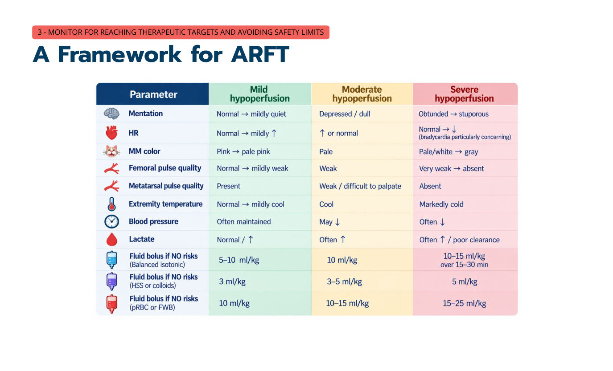

急性復甦輸液：讓治療成功的做法
主講：Elise Boller, DVM, DACVECC
TSFM Annual Conference 2026｜Day 1 — The Crashing Cat｜Session 2｜場次 02
資料來源標記：
投影片（數字＝講義 PDF 頁碼）
💡 補充 整理者補充（機轉、換算、交叉參照；不是講者說的）
目前只有講義，沒有課堂錄音；講義上的影片（Vimeo）與現場投票無法收錄。
目前只有講義，沒有課堂錄音；講義上的影片（Vimeo）與現場投票無法收錄。
⭐ 必記原則
- 四步驟框架：辨識休克與嚴重度 → 找出風險因子 → 選輸液種類與劑量 → 監測治療目標並避免併發症
- 伸手拿輸液之前先問三件事：有沒有灌流不足？多嚴重？有沒有風險因子？
- 第一線：平衡等張晶體液；貓的 bolus 是小量：輕度 5–10、中度 10、重度 10–15 mL/kg（15–30 分鐘）
- 高張食鹽水 7.5%：3–5 mL/kg、5–10 分鐘，效果約 30 分鐘，一定要接著給等張液；脫水、高血鈉、腎病禁用
- 出血性休克要早點給血——晶體液無法恢復攜氧能力；貓輸血前一定要驗血型
- 流程是 bolus → 重新評估 → 重複或加輔助治療；灌流不足持續越久，預後越差
- 停止輸液的三個時機：達到復甦終點、碰到安全終點、不太可能再有輸液反應
- 貓輸液過量的警訊：肺爆裂音（立刻停）、呼吸速率／用力上升、體重增加、水腫、流鼻水
場次資訊與四步驟框架
▾- 開場投票：「你在貓怎麼量血壓？」（Doppler、示波法……）——貓的血壓測量方法會影響後面「什麼數字需要處理」的判斷。
急性復甦輸液（ARFT）的框架
- 辨識休克與休克嚴重度
- 找出風險因子並調整做法
- 選擇輸液種類與劑量
- 監測治療目標、避免併發症
拿輸液之前先回答三個問題
1. 有灌流不足嗎？
- HR、黏膜顏色、CRT
- 脈搏品質、意識、體溫
2. 多嚴重？
- 輕度、中度、重度、失代償
3. 有風險因子嗎？
- 心臟、肺臟、敗血症／SIRS
- 低膠體滲透壓、腎臟、凝血異常
這三個答案決定輸液的種類、劑量與速度。
1. 輸液副作用的風險因子
▾八類風險因子
| 類別 | 💡 補充 貓常見的例子 | 💡 補充 為什麼要小心 |
|---|---|---|
| 心臟 | HCM 等心肌病（常沒有心雜音） | 前負荷一多就肺水腫／肋膜積液 |
| 肺臟 | 肺炎、肺挫傷、氣喘 | 受損的肺更容易滲漏 |
| 血管 | 敗血症、SIRS（血管通透性增加） | 輸液漏到間質，貓的休克器官是肺 |
| 膠體滲透壓 | 低白蛋白（PLE、肝病、滲出） | 水留不住在血管內 |
| 電解質 | 高／低血鈉 | 鈉矯正太快 → 神經併發症 |
| 腎臟 | 寡尿／無尿 AKI、CKD | 排不掉，容易輸液過量（見 10 AKI） |
| 活動性出血 | 血腹、創傷 | 拉高血壓可能沖掉血塊、稀釋凝血因子 |
| 血液 | 貧血、凝血異常 | 晶體液會稀釋 PCV 與凝血因子 |
講義只列出八個類別並附「輸液過量的貓」影片；例子與理由欄是整理者補充。
2. 輸液武器庫：用哪一種？
▾總覽
| 種類 | 評價 |
|---|---|
| 平衡等張晶體液 | ✅ 第一線 |
| 高張食鹽水 7.5% | ✅ 特殊情況 |
| 血液製品 | ✅ 適應症明確時 |
| 合成膠體液（HES） | ⚠️ 小心使用 |
| 低張晶體液 | ❌ 不能用來復甦 |
平衡等張晶體液：第一線
- 平衡（balanced）：成分接近細胞外液；等張（isotonic）：張力接近細胞外液。例：Normosol-R、Plasma-Lyte、LRS。
特殊情況怎麼選
| 情況 | 選擇 | 原因 |
|---|---|---|
| 低氯性代謝性鹼中毒 | 偏好含氯高的 0.9% NaCl | 補回 Cl⁻，避免更鹼化 |
| 低血鈉 | 選擇不會讓 Na⁺ 上升太快的輸液 | 矯正太快 → 滲透性去髓鞘 |
| 高血鈉 | 選擇不會讓 Na⁺ 下降太快的輸液 | 矯正太快 → 腦水腫 |
| 嚴重高血鉀（如尿道阻塞） | 平衡晶體液仍然適合 | 其中少量 K⁺ 不會明顯惡化高血鉀；恢復灌流反而可能改善 K⁺ |
| 出血性休克 | 適應症成立時及早給血 | 晶體液無法恢復攜氧能力 |
💡 補充 鈉矯正速度的常用上限是 每小時不超過 0.5 mEq/L（每天約 10–12 mEq/L）。慢性（> 48 小時）的鈉異常更要慢。
高張食鹽水（HSS）：特殊用途
把細胞內的水拉進血管——快、強、短效。
劑量與時間
- 7.5% HSS 3–5 mL/kg，IV 5–10 分鐘
- 效果約 30 分鐘
- 一定要接著給等張液
- 配法：23.4% HSS 用晶體液稀釋；或 23.4% HSS ＋ 膠體液 1 : 2.5 → 7.5%
最適合
- 頭部外傷（降顱內壓）
- 需要快速擴張血量
- （大型犬）
禁忌
- 脫水、高血鈉
- 血量正常
- 腎臟疾病
💡 補充 HSS 是靠「借用」細胞內和間質的水；脫水的貓已經沒有水可借，所以禁用。另外 23.4% 原液絕對不可直接 IV。
血液製品
全血
- 最理想：一次補回 RBC、凝血因子和容積
pRBC ＋ FFP
- 沒有全血時的替代
FFP
- 對低血容很好，但取得與操作麻煩
- 目標 PCV > 20–24%
- 估算：pRBC 1 mL/kg 約升 PCV 1%；全血 2 mL/kg 約升 PCV 1%
- 貓：輸血前一定要驗血型（天然抗體，A 型貓輸到 B 型血可致命；詳見 06）
合成膠體液：小心
- 例：Voluven®（HES）。3–5 mL/kg 一次，5–10 分鐘給完；擴容效果可維持數小時。
- 可和 HSS 併用做小量復甦。
- 副作用：凝血功能受損、可能腎損傷、水腫惡化。敗血症病患要特別小心。
3. 依嚴重度給 bolus：bolus → 評估 → 重複
▾ARFT 劑量表（沒有風險因子時）

| 參數／輸液 | 輕度 | 中度 | 重度 |
|---|---|---|---|
| 意識 | 正常 → 稍安靜 | 沉鬱 | 意識模糊 → 木僵 |
| 心跳 | 正常 → 稍快 | ↑ 或正常 | 正常 → ↓（心搏過慢特別危險） |
| 黏膜 | 粉紅 → 淡粉紅 | 蒼白 | 蒼白／白 → 灰 |
| 股／蹠動脈脈搏 | 正常／摸得到 | 弱／難摸 | 非常弱／摸不到 |
| 肢端溫度 | 正常 → 稍涼 | 涼 | 明顯冰冷 |
| 血壓／乳酸 | 常維持／正常或↑ | 可能↓／常↑ | 常↓／常↑、清除差 |
| 平衡等張晶體液 | 5–10 mL/kg | 10 mL/kg | 10–15 mL/kg，15–30 分鐘 |
| HSS 或膠體液 | 3 mL/kg | 3–5 mL/kg | 5 mL/kg |
| pRBC 或新鮮全血 | 10 mL/kg | 10–15 mL/kg | 15–25 mL/kg |
💡 補充 對照：貓的血量約 50–60 mL/kg（狗約 80–90）。傳統「休克劑量」貓 40–60 mL/kg 是整個血量，現在不再一次給完，而是用上表的小量 bolus 反覆評估。有心臟、肺臟等風險因子時，bolus 再減量、給更慢。
Bolus–評估–重複
給 bolus → 重新評估灌流 → 休克緩解了嗎？→ 沒有：重複 bolus 或加上輔助治療（升壓劑、輸血、處理原因）。
時間很重要：灌流不足沒有矯正的時間越長，預後越差。
互動題：「你認為血壓多少才算『需要處理』？」——答案見下一節的目標值。
4. 什麼時候停？復甦終點與安全終點
▾停止的三個理由
- 已達到復甦終點
- 碰到安全終點（開始出現輸液過量的徵象）
- 不太可能再對輸液有反應
復甦終點：客觀目標
| # | 指標 | 目標 |
|---|---|---|
| 1 | 心跳、ECG | 正常速率與節律，160–180 次/分、竇性 |
| 2 | 血壓 | MAP > 65–70 mmHg；Doppler > 80–100 mmHg |
| 3 | 前負荷估計／CVP／POCUS | 前負荷足夠：後腔靜脈、左心室充盈、有無積液 |
| 4 | 尿量、USG | > 2 mL/kg/hr，USG 1.008–1.012 |
| 5 | 乳酸 | < 1.5–2 mmol/L |
| 6 | PCV／TS | PCV > 24%、脫水已矯正 |
| 7 | 血氧含量 | PCV、Hb、SpO₂ |
| 8 | 體液平衡為零 | 找出理想（脫水矯正後）體重，追蹤到與預測體重持平 |
💡 補充 貓用 Doppler 量到的數值比較接近收縮壓（有人認為介於收縮壓與平均壓之間），所以 Doppler 目標（80–100）比 MAP 目標（65–70）高。
安全終點：出現這些就停
| 徵象 | 意義 |
|---|---|
| 🫁 肺爆裂音 | 聽到就立刻停 |
| 🔺 呼吸速率／用力上升 | 正在發生肺水腫 |
| 體重增加過多、周邊水腫 | 體液累積 |
| 水腫惡化或流鼻水（貓） | 貓特有的輸液過量徵象 |
💡 補充 貓輸液過量常先出現肋膜積液而不是肺爆裂音，也可能出現結膜水腫（chemosis）、透明鼻分泌物。呼吸速率上升時用 POCUS 看肋膜腔。
參考資料
▾Boller E. Acute Resuscitative Fluid Therapy: Treating for Success. TSFM Annual Conference 2026, Day 1 Session 2（講義 23 頁）。